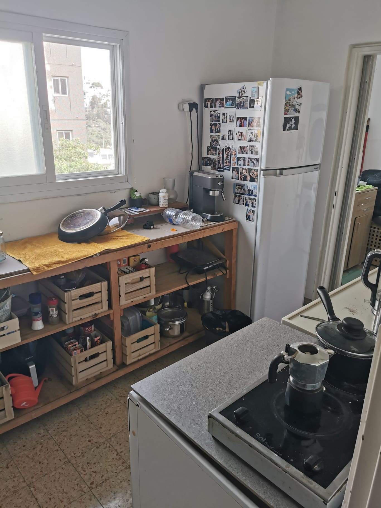

Merav Keidar
MSc Student · Computer Science · Technion
I am advised by Or Litany (Technion) and Rajalakshmi Nandakumar (Cornell Tech). My research is in 3D computer vision, neural scene representation, and radar perception for autonomous systems.

Publications
VideoMDM: Towards 3D Human Motion Generation From 2D Supervision
A diffusion framework that learns 3D human-motion priors from monocular video using only 2D supervision, without requiring 3D ground-truth annotations.
arXiv / code / project page
Projects

Physics-informed novel-view synthesis for underwater scenes. Embeds a differentiable underwater image-formation model into EVER's volumetric renderer, achieving best PSNR and SSIM on all four SeaThru-NeRF benchmark scenes at 20 FPS (~260× faster than SeaThru-NeRF, the baseline). As a free by-product, it "dewaters" scenes at inference — no clean-water supervision needed.

An advanced image inpainting pipeline built on Stable Diffusion 2. Introduces four improvements over vanilla diffusion inpainting — masked cross-attention, resampling, mask dilation, and guidance-scale scheduling — with a full evaluation framework and an interactive GUI mask-creation tool.

A real-life pintograph drawing machine with a matching Grasshopper simulator and interactive GUI. Built with Ashish Jain and Shay Sharvit as part of the studio course "Matter of Perspective," directed by Prof. Gershon Elber and Yoav Sterman.

A computer graphics GUI built with OpenGL as part of the Computer Graphics course at Technion CS. Features real-time 3D rendering with configurable shaders, mesh loading, and lighting controls.